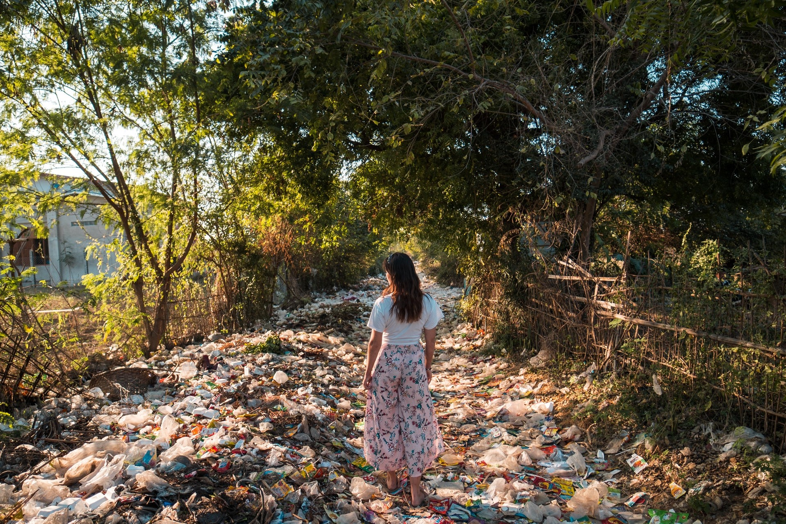
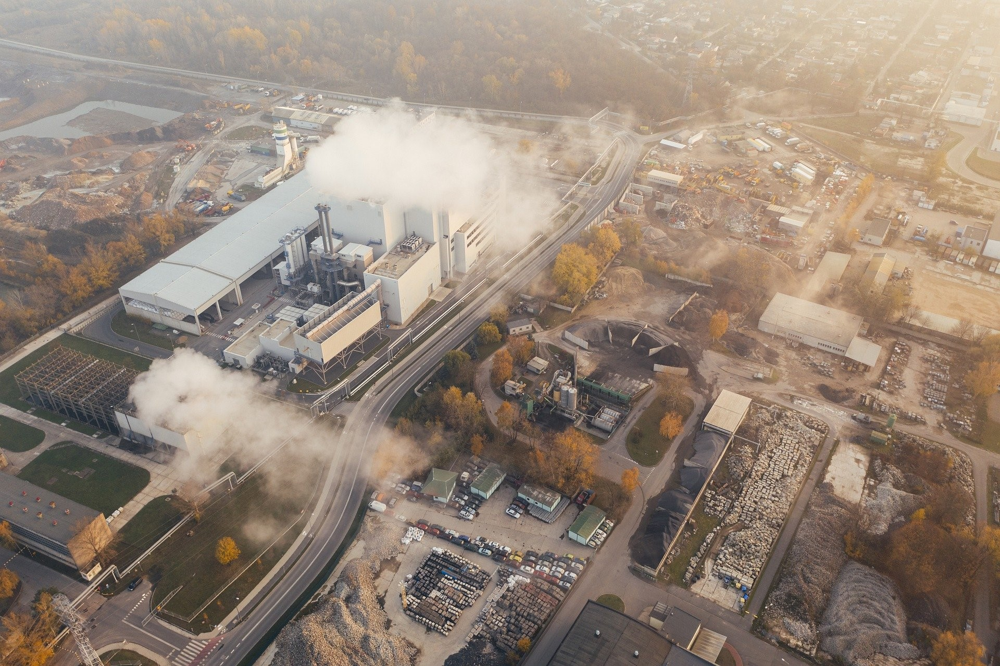
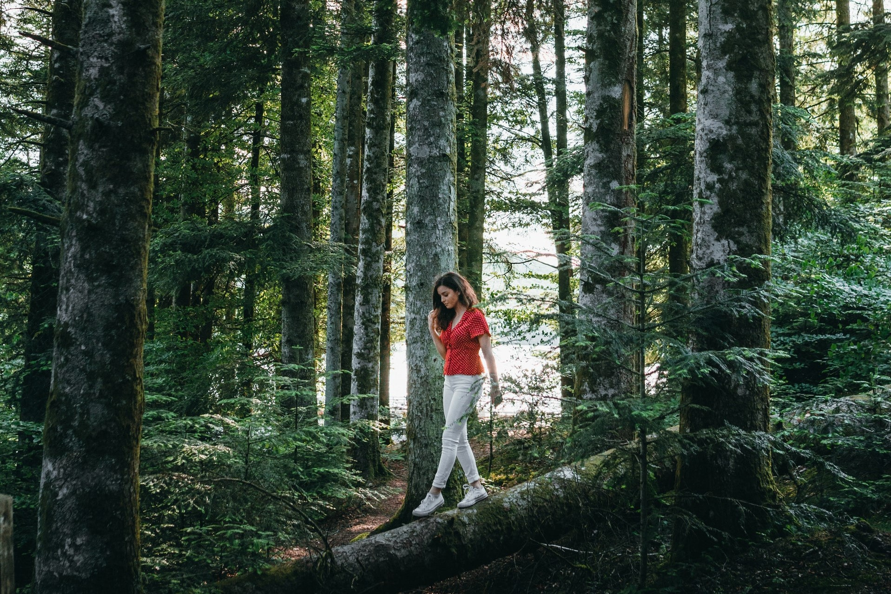

Our Current Situtation

Lets put some things in perspective.
- Around 14 billion pounds of waste ends up in our oceans every year, with much of it being
plastic.
- Nine out of ten seabirds have swallowed plastic and hold it in their stomachs.
- A plastic bottle takes about 450-500 years to decompose and the
more or less indestructible PET containers will never decompose.
- When plastic is (finally) decomposed, it turns into toxic micro-plastics.
- The manufacturing of plastic bottles uses 1.5 million barrels of oil per year and even more
oil is used to transport them around the world.
And these are only just a very few of the many unsettling facts.
Eco-Friendly Production

The immediate difference between environmentally friendly processes and
conventional, less planet-focused processes is the emphasis put on energy conservation in the entire
manufacturing process as well as in the production of products. This means selecting everything from
fuel sources to light bulbs, as well as packaging and promotion in a sustainable manner. Companies
may start this process slowly or make an organizational change to this mode of activity. However
when the
process of making environmentally sustainable goods takes place, there is likely to be a major shift
in the emphasis for manufacturing across the globe.
By changing the way resources are used to
produce environmentally friendly goods and other related things, companies may expect to see a
decrease in power bills from offsetting. Energy efficient light bulbs, avoiding electrical standby
devices and efficient waste management strategies are just some of the techniques that will help to
minimize costs instantly.
Long-term Benefits

While the commercial effects of being Eco-Friendly can be seen almost instantly, it may take longer
to unfold the other
benefits of converting to a sustainable way of producing reusable shopping bags and other items.
This requires the primary goal of protecting the atmosphere, which can take longer to demonstrate
real improvements in air quality and related environmental factors. In addition, making
manufacturing greener is also likely to lead to less dependence on non-renewable
energy sources. according to the International Energy Agency, fossil fuels remain dominant energy
sources, highlighting how important it is to act now and reduce this degree of dependence on a
healthier, more sustainable climate.